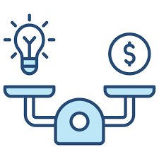
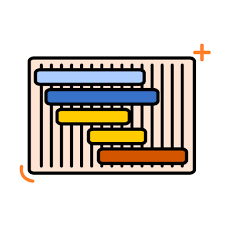
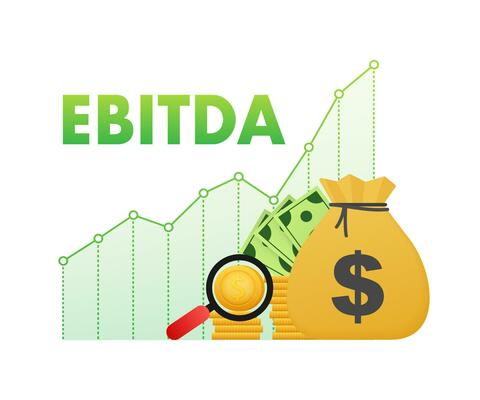
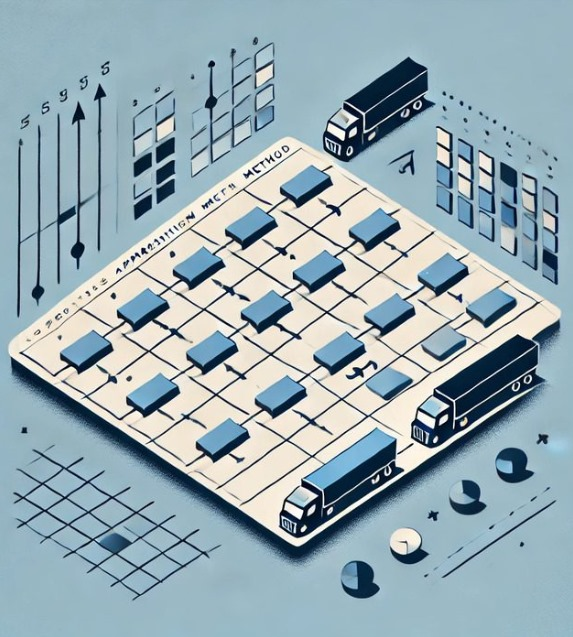
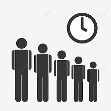
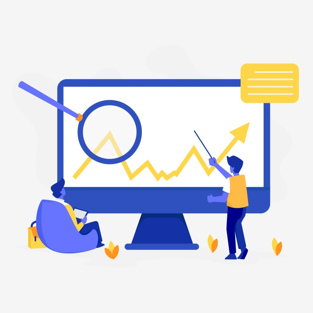
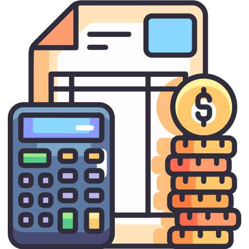

Índices & Ratios
Calculador de Punto de Equilibrio (6 Productos)
Calculador de Intereses
Control de Stock
Rutas Críticas - CPM - Diagrama de Gantt
EVA y EBIDTA
Calculador de Vogel
Modelos de Líneas de Espera
Plantilla General
Presupuestos